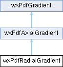

Class representing radial gradients. (For internal use only) More...
#include <pdfgradient.h>
Inheritance diagram for wxPdfRadialGradient:

Public Member Functions | |
| wxPdfRadialGradient (const wxPdfColour &colour1, const wxPdfColour &colour2, double x1, double y1, double r1, double x2, double y2, double r2, double intexp) | |
| Constructor. More... | |
| virtual | ~wxPdfRadialGradient () |
| Destructor. More... | |
| double | GetR1 () const |
| Get radius at start point. More... | |
| double | GetR2 () const |
| Get radius at end point. More... | |
 Public Member Functions inherited from wxPdfAxialGradient Public Member Functions inherited from wxPdfAxialGradient | |
| wxPdfAxialGradient (const wxPdfColour &colour1, const wxPdfColour &colour2, double x1, double y1, double x2, double y2, double intexp) | |
| Constructor. More... | |
| virtual | ~wxPdfAxialGradient () |
| Destructor. More... | |
| const wxPdfColour & | GetColour1 () const |
| Get the gradient colour 1. More... | |
| const wxPdfColour & | GetColour2 () const |
| Get the gradient colour 2. More... | |
| double | GetX1 () const |
| Get x coordinate of start point. More... | |
| double | GetY1 () const |
| Get y coordinate of start point. More... | |
| double | GetX2 () const |
| Get x coordinate of end point. More... | |
| double | GetY2 () const |
| Get y coordinate of end point. More... | |
| double | GetIntExp () const |
| Get the interpolation exponent. More... | |
| Public Member Functions inherited from wxPdfGradient | |
| wxPdfGradient (wxPdfGradientType type) | |
| Constructor. More... | |
| virtual | ~wxPdfGradient () |
| Destructor. More... | |
| void | SetObjIndex (int n) |
| Set gradient object index. More... | |
| int | GetObjIndex () |
| Get gradient object index. More... | |
| wxPdfGradientType | GetType () const |
| Get the gradient type. More... | |
Additional Inherited Members | |
| Protected Attributes inherited from wxPdfGradient | |
| wxPdfGradientType | m_type |
| Gradient type. More... | |
Detailed Description
Class representing radial gradients. (For internal use only)
Constructor & Destructor Documentation
◆ wxPdfRadialGradient()
| wxPdfRadialGradient::wxPdfRadialGradient | ( | const wxPdfColour & | colour1, |
| const wxPdfColour & | colour2, | ||
| double | x1, | ||
| double | y1, | ||
| double | r1, | ||
| double | x2, | ||
| double | y2, | ||
| double | r2, | ||
| double | intexp | ||
| ) |
Constructor.
- Parameters
-
colour1 first colour colour2 second colour x1 x ccordinate of the start point y1 y ccordinate of the start point r1 radius at start point x2 x ccordinate of the end point y2 y ccordinate of the end point r2 radius at end point intexp interpolation exponent
◆ ~wxPdfRadialGradient()
|
virtual |
Destructor.
Member Function Documentation
◆ GetR1()
|
inline |
Get radius at start point.
◆ GetR2()
|
inline |
Get radius at end point.
The documentation for this class was generated from the following file: